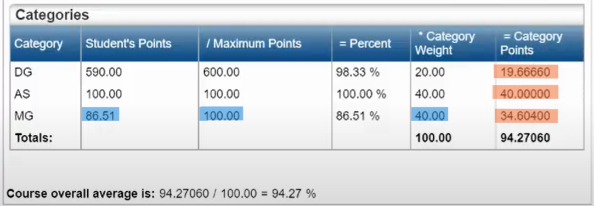
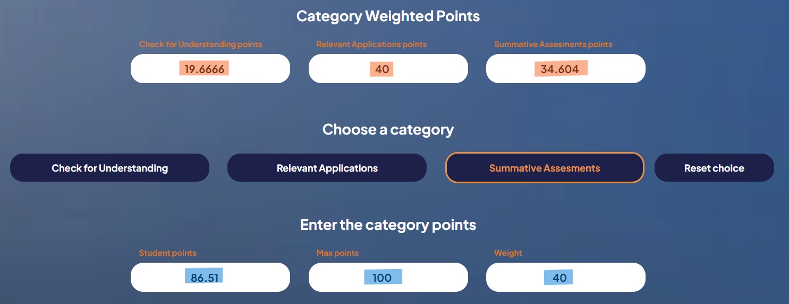
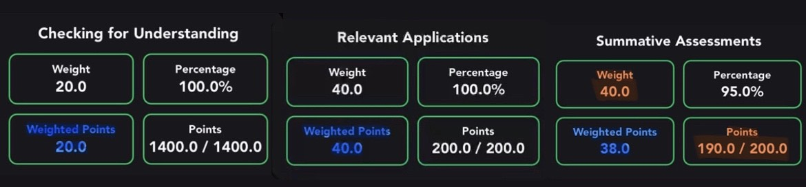
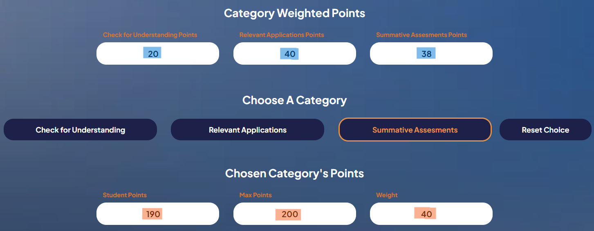

|
Welcome! Few notes on how it works: - The calculator predicts the grade needed to achieve or maintain. The minimum letter grade. For example, A = 89.5, B = 79.5, C = 69.5. - You don’t need to reset the entire calculation to change some inputs. The results will update as long as you select a category. |
Click the button for the tutorial based on your platform!
Website Tutorial
Example

Step 1. Start on the home page on HAC, which you can find at the top with a home icon.
Step 2. Click on a specific class highlighted in blue to predict your grades. A popup screen will appear.
Step 3. On the far right of the popup, find where it says "Category Points" and fill out the "Category Weighted Points" section (see image above).
Step 4. Choose the category for which you want a prediction. If needed, use the reset button to undo your selection.
Step 5. Find the row for the category you chose in step 3 and fill in the "Chosen Category's Points" section (see image above).
Optional: Enter a grade you think you might have received in that category.
Step 6. Click submit to see the results, which will indicate the grade you need in that category to achieve or maintain a letter grade.
Optional: Click the button to reset, or use the link below to calculate grades for finals.
App (Gradeway) Tutorial
Example

Step 1. Click on a specific class in the Grades tab, which you can find at the bottom with an A+ icon.
Step 2. Click on each category (CFU, RA, SA) to view "Weighted Points." Fill out the "Category Weighted Points" section (see image above).
Step 3. Choose the category for which you want a prediction. If needed, use the reset button to undo your selection.
Step 4. Click on the category you selected in Step 3 and fill in the "Chosen Category's Points" section (see image above).
Optional: Enter a grade you think you might have received in that category.
Step 6. Click submit to see the results, which will indicate the grade you need in that category to achieve or maintain a letter grade.
Optional: Click the button to reset, or use the link below to calculate grades for finals.